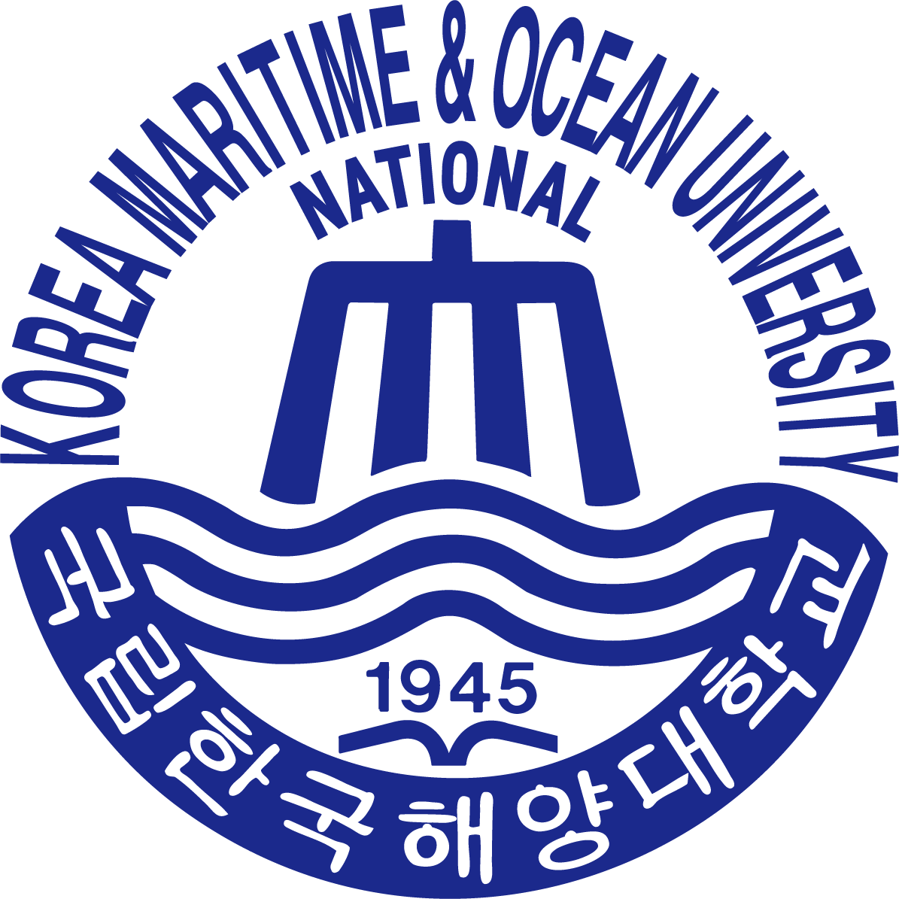
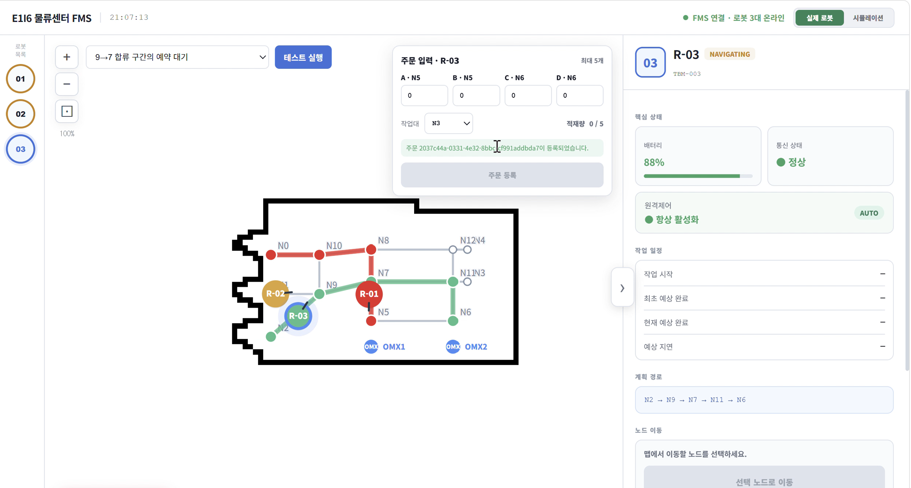
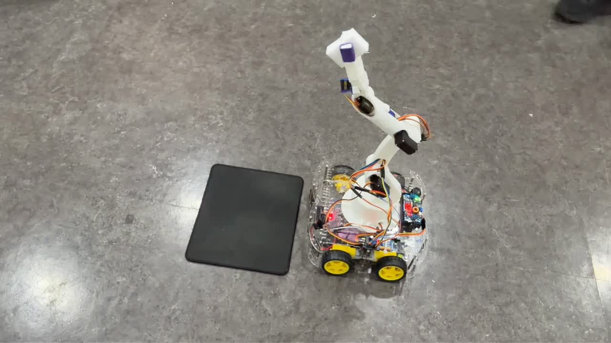
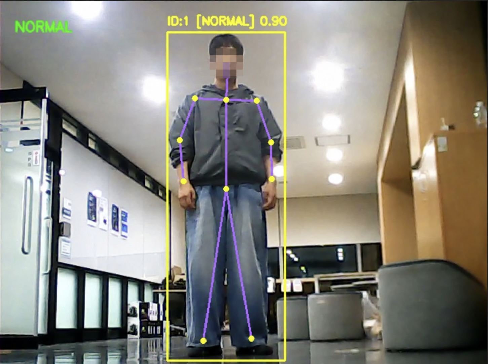
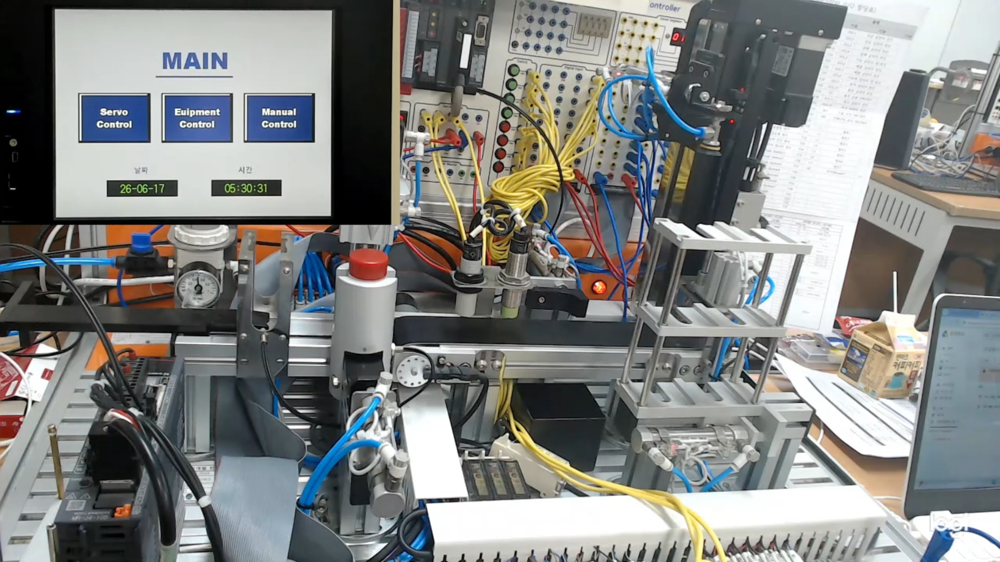

01
ROS2 기반 로봇 소프트웨어
ROS2Nav2GazeboTFEKF
- 노드·토픽·TF를 활용한 로봇·관제 연동
- 주행·위치추정 설정 조정과 실기체 시험
ROBOTICS SOFTWARE PORTFOLIO
Robot SoftwareSystem IntegrationAMR 자율주행
바다에서는 선박의 항로를, 지금은 로봇의 경로를 다룹니다.

AI융합 로봇SW 개발자 과정대한상공회의소 서울기술교육센터2026.04—2026.11 · 수강 중
에이치라인해운2등 항해사 · 2021.06—2024.02
01 / SKILLS & EXPERIENCE
주행·제어·인식·공정 자동화를 연결해 온 경험
ROS2Nav2GazeboTFEKF
STM32C/C++HALFlutter
PythonYOLO PoseFP16INT8
PLCHMIGX Works2
Git GitHub Jira Confluence
02 / PROJECTS
무엇을 만들었는지, 그 안에서 무엇을 맡았는지.
AX Multi-Robot Logistics
주문에 따라 여러 대의 자율주행 로봇이 물품을 이송하고, 로봇팔이 적재·하역하는 물류 자동화 시스템을 개발합니다.
Route Graph · 관제 위치 토픽 · 좌표 측정 도구
Kev-0.8B로 MAPF를 구현하고, 기존 방식과 같은 조건에서 대체·적용 가능성을 검토할 계획입니다.

주문·배차 → 피킹 위치 주행 → 적재 → 패킹 위치 이송 → 하역
그리드 이송 경로의 이동 지점·연결 관계를 노드·엣지로 구성해 FMS 팀에 전달했습니다.
TF의 map → base_footprint 변환으로
map 기준의 로봇 위치를 구하고, FMS 관제용 토픽으로 발행했습니다.
TF 위치·방향을 반복 측정해 평균·표준편차를 계산하고, CSV 저장·RViz 시각화를 구현했습니다.
주행 파라미터를 바꾸며 정차 위치를 반복 측정하고, 위치추정·기체·환경 조건을 함께 점검하고 있습니다.
EKF 설정을 조정하며 위치추정 안정화를 검토 중입니다. 적용 전후 궤적·정지 상태를 비교할 계획입니다.
의사결정 모델 Kev-0.8B로 MAPF를 구현하고, 기존 방식과 비교해 대체·적용 가능성을 검토할 계획입니다.
전체 공정 시연 영상과 FMS 웹 관제 화면입니다.
FMS 작업 지시부터 AMR 이송과 OMX 적재까지의 흐름
YouTube에서 보기 ↗
팀 관제 화면 · 경로 그래프와 로봇별 위치·상태 표시
이미지를 누르면 크게 볼 수 있습니다.임베디드 제어, 비전 인식, PLC 자동화 프로젝트입니다.

02 / EMBEDDED & APP
RC카 주행부터 로봇팔 티칭까지,
하나로 연결한 모바일 앱 기반 제어 시스템.
모바일 앱으로 주행하고 로봇팔로 물체를 옮기는 시연입니다.

03 / VISION & CONTROL
STM32 제어와 Raspberry Pi 비전 AI를 연결해,
주행과 인식을 함께 구현.
로봇 주행과 YOLO Pose 기반 인식 동작을 보여주는 시연입니다.

04 / FACTORY AUTOMATION
가공·배출·적재 공정과
비상정지 시퀀스를 구현.
PLC 공정의 비상정지 동작을 보여주는 시연입니다.
PROBLEM SOLVING
amcl_pose 메시지 수신에 의존해야 하는지 검토했습니다. 기존 구조에서는 AMCL 메시지를 받을 때 위치를 갱신했습니다.map → base_footprint 변환에서 로봇 위치를 읽어 관제용 토픽으로 발행하는 별도 ROS2 노드를 작성했습니다.03 / EXPERIENCE & EDUCATION